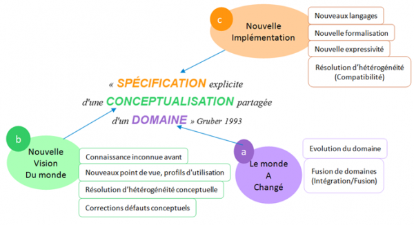

OntoVersionGraph
Recherche et objectifs
Ce projet a fait l'objet de la thèse de Perrine Pittet.
L’ontologie, un peu d’histoire...
À l’origine, les ontologies sont une branche fondamentale de la métaphysique, qui est une discipline philosophique. Comme beaucoup de concepts philosophiques, les bases de l’ontologie ont été posées par les Grecs des siècles avant J.C.
“Ontologie : Ontos (l’existant) + Logos (l’étude)”
Ce concept a été par la suite étudié, utilisé et approfondi par de grands noms de l’histoire, comme Platon, Thomas d’Aquin, Descartes, ou encore Kant.
Les ontologies en informatique
En informatique, une des définitions qui fait autorité dans la littérature scientifique est celle posée par Gruber, en 1993.
Définition « Une ontologie est une spécification explicite de la conceptualisation d’un domaine » Gruber Le "domaine" est le monde que l’ontologie doit décrire. Cette description est un vocabulaire de concepts partagé par tous les spécialistes du domaine, d’où la notion de "conceptualisation partagée". Enfin pour sa compréhension par la machine, cette description doit être spécifiée dans un langage expressif et non ambigu c’est-à-dire "explicite".
Plusieurs caractéristiques sont venues préciser cette définition dans la littérature.
Caractéristiques
- Les ontologies sont formelles : elles sont exprimées à partir d’un langage et d’une syntaxe définis, et basés sur les mathématiques pour leurs définitions. Cela permet ainsi de donner la possibilité aux ordinateurs de traiter ces concepts.
- Les ontologies sont lisibles par les humains et les ordinateurs. Elles sont développées et partagées par les humains pour être utilisées par les machines.
- Les ontologies sont vastes. Elles sont censées inclure toute la connaissance associée aux concepts du domaine étudié, et ne doit pas se limiter au champ d’application d’une application en particulier
- Les ontologies sont partageables. De par leur but final, la publication sur internet pour en faire une gigantesque base de données, les ontologies sont des sortes de grosses bibliothèques. Cela facilite la fusion d’ontologies, ainsi que leur insertion dans les systèmes d’informations.
L’évolution d’ontologie
Du changement dans l’air... Le monde que nous connaissons est soumis à l’inévitable loi du temps, et en subit donc les évolutions. En effet, le temps est un facteur de changement et qui dit changement du monde, dit changement de la connaissance que nous en avons. Logiquement, si les ontologies décrivent ce monde alors celle-ci doivent intégrer ses changements. Aussi les ontologies ne sont pas seulement impactées par les changements issus de leur domaine. Voici une façon d’examiner les causes de ces changements à partir de la définition de Gruber.

Les changements peuvent intervenir également au niveau de la conceptualisation de l’ontologie. En effet, le domaine ou la connaissance que l’on en a peuvent impliquer des changements sur les concepts. Par exemple, un téléphone portable des années 90 n’aura pas la notion d’écran tactile, ni d’appareil photo etc. qui sont des concepts attribués aux mobiles d’aujourd’hui. De même le concept de smartphone n’existait pas alors. Aussi la conceptualisation de l’ontologie peut être impactée par un nouveau point de vue sur le domaine, par exemple une nouvelle perspective d’utilisation. Dans une ville, un pont sera par exemple vu comme un moyen de traverser une rivière par un automobiliste mais sera vu comme un obstacle à franchir par un bateau. Enfin, la spécification de l’ontologie peut être amenée à changer, notamment lorsque le langage utilisé n’est pas assez expressif. Par exemple si l’on souhaite représenter une disjonction de concepts il n’est possible de le faire qu’avec un langage qui prévoit cette notion. Cela permet notamment de faire en sorte qu’un individu ne puisse pas être à la fois une femme et à la fois un homme dans l’ontologie.
Le domaine de recherche lié à ces problématiques est appelé évolution d’ontologie. L’évolution d’ontologie est un problème d’autant plus crucial que les ontologies sont utilisées par des applications qui en dépendent ou encore par d’autres ontologies. Ainsi un changement opéré sur une ontologie va impacter tous les composants qui en dépendent rendant parfois les concepts inaccessibles. Aussi il existe une notion de cohérence dans les ontologies dont la spécification est basée sur la logique. En effet un changement peut entrainer des contradictions à l’intérieur de l’ontologie. Alors l’ontologie incohérente ne peut plus être utilisée pour inférer de nouvelles connaissances ou encore garantir un fonctionnement cohérent de l’application qui l’utilise. La gestion de la cohérence de l’ontologie pendant son évolution est un des points les plus critiques. Enfin l’évolution d’une ontologie génère de nouvelles versions de celles-ci et pour garantir l’accès à une version donnée, l’ontologie doit se munir d’un système de versioning. Le domaine de recherche lié à cette problématique s’intitule le versioning d’ontologie. Combiné à l’évolution, le versioning permet un accès en toute transparence aux différentes versions de l’ontologie. Aussi il permet de conserver l’historique de tous les changements effectués sur chaque version, ce qui peut permettre des traitements comparatifs ou autres vérifications ultérieures à l’évolution.
Publications
Article dans une revue
- Perrine Pittet, Christophe Cruz, Christophe Nicolle. An ontology change management approach for facility management. Computers in Industry, Elsevier, 2014, Special Issue on The Role of Ontologies in Future Web-based Industrial Enterprises, 65 (9), pp.1301-1315. 10.1016/j.compind.2014.07.006.
Chapitre d'ouvrage
- Perrine Pittet, Christophe Cruz, Christophe Nicolle. Ontology Views for Ontology Change Management. IGI Global. Encyclopedia of Information Science and Technology, Third Edition, Information Science Reference (an imprint of IGI Global), pp.5180-5187, 2015, Encyclopedia of Information Science and Technology, Third Edition, 978-1-4666-5888-2. 10.4018/978-1-4666-5888-2.ch512.
Communication dans un congrès
- Christophe Cruz, Perrine Pittet. A Meta-Conceptual Modeling Approach for Change Modeling in Applied Ontology, 15th International Conference on Informatics in Economy (IE 2016), Education, Research & Business Technologies, Jun 2016, Cluj Napoca, Romania, IE 2016: EDUCATION, RESEARCH & BUSINESS TECHNOLOGIES, pp.442-447, 2016, International Conference on Informatics in Economy.
- Perrine Pittet, Christophe Cruz, Christophe Nicolle. Modeling Changes for SHOIN(D) Ontologies: An Exhaustive Structural Model. ICSC 2013, Seventh IEEE International Conference on Semantic Computing, Sep 2013, Irvine, United States. pp.Perrine Pittet, 2013.
- Perrine Pittet, Christophe Cruz, Christophe Nicolle. A Structural SHOIN(D) Ontology Model for Change Modelling. 2nd International Workshop on Methods, Evaluation, Tools and Applications for the Creation and Consumption of Structured Data for the e-Society (META4eS'13), Sep 2013, Graz, Austria. Springer Berlin Heidelberg, 8186, pp 442-446, 2013, 10.1007/978-3-642-41033-8_56.
- Mahdi Gueffaz, Perrine Pittet, Sylvain Rampacek, Christophe Cruz, Christophe Nicolle. INCONSISTENCY IDENTIFICATION IN DYNAMIC ONTOLOGIES BASED ON MODEL CHECKING. The 8th International Conference on Web Information Systems and Technologies, Apr 2012, Porto, Portugal. pp.418-421, 2012.
- Perrine Pittet, Christophe Nicolle, Christophe Cruz. Guidelines for a Dynamic Ontology - Integrating Tools of Evolution and Versioning in Ontology. KMIS 2011 - International Conference on Knowledge Management and Information Sharing is part of 3rd International Joint Conference on Knowledge Discovery, Knowledge Engineering and Knowledge Management., Oct 2011, Paris, France. 2011.
- Perrine Pittet, Christophe Cruz, Christophe Nicolle. Towards Dynamic Ontology - Integrating Tools of Evolution and Versionning in Ontology. IARIA. SEMAPRO 2010, The Fourth International Conference on Advances in Semantic Processing, Oct 2010, Florence, Italy. pp.978-1-61208-104-5, 2010.